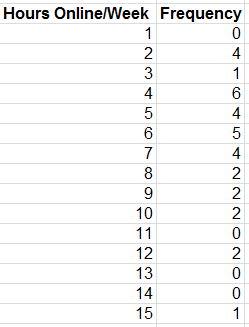
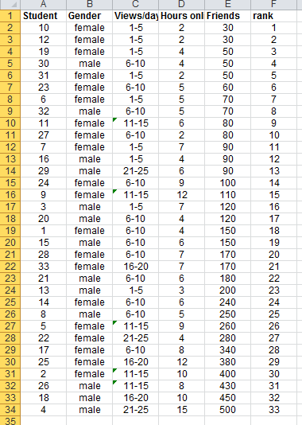
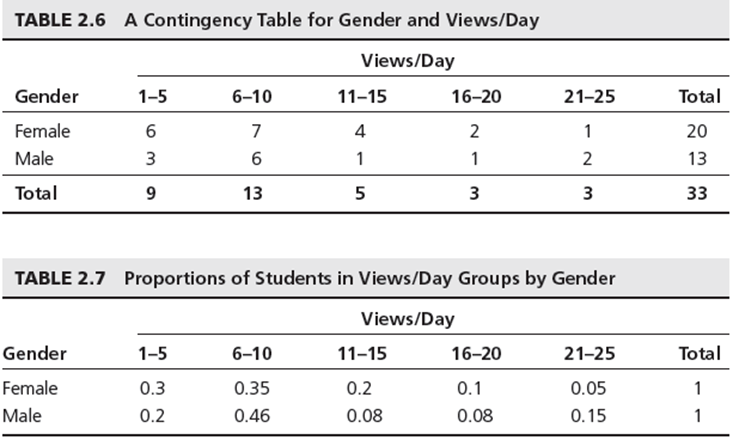

There is a need in data analysis to describe variables using basic statistical tools. Numerical measures of location, dispersion, shape, and association provide more specific quantitative information about data. This lab will introduce you to measure of location such as average, median, and mode. Measures of dispersion which include the range, the variance, and standard deviation. Measures of shape includes coefficient of skewness.
categories according to specified characteristics. For example, a firm's customers might be classified by region (north america, south america, europe, and pacific), employees categorised as managers, supervisors and associates. The categories bear no quantative relationship to one another, but we usually assign an arbitrary number to each category to ease the process of managing the data and computing statistics. Categorical data are usually counted or expressed as proportions or percentages. This is what we did in the last lab.
ordered or ranked according to some relationship to one another. A common example in business is data from survey scales; for example, rating a service as poor, average, good, very good or excellent. Such data are categorical but also have a natural order and consequently are ordinal. other examples include ranking regions according to sales levels each month. Ordinal data are more meaningful than categorical data because data can be compared to one another, "excellent" is better than "very good". However like categorical data, statistics such as averages are meaningless even if numerical codes are associated with each category, statistical differences between categories are also meaningless. For example the difference between rank 2 and 3 may not be equal to the difference between 3 and 4.
ordered , have a spcified measure of the distance between observations but have no natural zero. Common examples are time and temperature. Time is relative to global location, and calendars have arbitrary starting dates. Both the Fahrenheit and Celsius scales represent a specified measure of distance in degrees but have no natural zero. Ratios cannot be meaningful on interval data, for example we can't say that 50 degrees is twice as hot as 25 degrees. Only the differences provide information on how much hotter or later or better one observation is over another. We can do a comparison of ranges, averages and some other statistical measures.
have a natural zero. For example, dollar/euro has an absolute zero. Thus ratios are meaningful. Knowing Munster sold €20,000 in March and Leinster sold €10,000 means that Munster sold twice as much as Leinster. Most business and economic data fall into this category, and statistical methods are the most widely applicable to them.
This classifcation of data types is hierarchial, in that each level includes all of the information content of the one preceding it. For example Ratio data can be converted to any of the other types of data. Interval data can be converted to ordinal or categorical.
Higher level of measurement is most useful to a manager. Therefore before data are collected, consideration must be given to the type of data needed.
Measures of location provide estimates of a single value that in some fashion represents "centering" of the entire set of data. The most common is the average or formally called the arithmetic mean.
The mean is the sum of all observations, divided by the number of observations.
For the Facebook survey data, the sum of the data in column D for hours online/week is 206. by dividing this by the number of students (33), we compute the mean as:
206/33 = 6.24You can also calculate the mean in Excel by using the AVERAGE(data range) function. For the Facebook data it would be AVERAGE(E4:E36) = 176.97 if we were looking for the mean number of facebook friends.
The mean is unique for every data set and is meaningful for both interval and ratio data. However it can be affected by outliers, observations that are radically different from the rest.
Another measure is the median, the middle value when the data are arranged from smallest to largest. For an odd number of observations, the median is the middle of the sorted numbers. For an even number of observations, the median is the mean of the two middle numbers. The median is the same as the 50th percentile and the second quartile that we covered in class.
To find the median in Excel we have a couple of options, we can sort the values in the Facebook data and then determine the median. Since we have 33 observations the median will be the 17th observation or 120 Friends. The excel function MEDIAN(data range) would also provide the result.
The median is meaningful for ratio, interval and ordinal data. As opposed to the mean, the median is not affected by outliers. In this case the median is very close in value to the mean.
The mode is the observation that occurs most frequently. The mode can easily be identified from a frequency distribution or histogram. For instance in the Facebook data we can see that the largest frequency of hours online/week is 6, which corresponds to a value of 4 hours per week.
You can also use the Excel function MODE.SNGL(data range).
What is the mode of Facebook friends?
The mode is most useful for data sets that consist of relatively small number of unique values. When a data set has few repeating values the mode is not very useful.
What is the mode in this frequency distribution?

Dispersion refers to the degree of variation in the data, that is, the numerical spread of the data. For instance comparing the histograms of the facebook data clearly shows more variation in Friends than in the number of hours online/week.
The range is the simplest measurement of dispersion. It is computed as the difference between the maximum and the minimum value in the data set. Although Exel does not provide a range function you can use the combination of the MIN(data range) and MAX(data range) functions to get the answer.
To avoid outliers, the interquartile (IQR) is often used, which is simply Q3-Q1. This range is the middle 50% of the data.
A more commonly used measure of dispersion is the variance, whose computation depends on all the data. The larger the variance, the more the data are "spread out" from the mean, and the more variability one can expect in the observations.
The formula used to calculate the variance is different for populations and samples.
The function VAR.S(data range) may be used to compute the sample variance. The function VAR.P(data range) may be used to compute the population variance.
A related measure which is perhaps the most popular and useful measure of dispersion, is the standard deviation, which is defined as the square root of the variance.
The Excel function STDEV.S(data range) calculates the standard deviation for a sample. The Excel function STDEV.P(data range) calculates the standard deviation for a population.
Using these functions for the facebook survey data, we find that the sample variance for hours online/week is 9.81 and the sample standard deviation is 3.13, and that the sample variance for the number of friends is 17996.78 and the sample standard deviation is 134.15.
The standard deviation is easier to interpret as it uses the same units as the data. In this case the number of facebook friends varies by 134, this is quiet a big variation.
The standard deviation is a useful measurement of risk, particularly in financial analysis.
Open the excel file Closing Stock Prices Calculate the average (mean) and standard deviation (sample) for each company, IBM, INTC etc. The last column is the Dow Jones Industrial average over a one month period.
The average closing stock price for Intel (INTC) and General Electric (GE) are quite similar at $18.81 and $16.19 respectively. However the standard deviation of INTC's price over the time frame was $0.50, while GE's was $0.35. GE had less variability and, therefore, less risk.
A larger standard deviation implies that while a greater potential exists of a higher return, there is also greater risk of realising a lower return. Many investment publications and web sites provide stadard deviations of stocks and mutual funds to help investors assess risk in this way.
One of the most important results in statistics is Chebyshev's theorem. For any set of data, a proportion of values lie within a certain number of standard deviations of the mean. The empirical rules from this theorem may be applied as such:
Depending on the data the percentages may be higher or lower.
For the facebook data, one standard deviation around the mean yields:
mean calcuated on friends = 176.97
standard deviation = 134.15
One standard deviation below the mean: 176.97 - 134.15 = 42.82
One standard deviation above the mean: 176.97 + 134.15 = 311.12If we count the number of observations in the range from 42.48 and 311.12 we find 25 out of the 33 observations lie in that area. Thus 75.8% of students fall within one standard deviation of the mean.
How may students fall within 2 standard deviations of the mean in the facebook data?
Calculate the observations that fall within one, two and three standard deviations of the mean for each of the stocks in Closing Stock Prices. How do they compare with the empirical rules?
Data are often expressed as percentiles and quartiles. You are no doubt familiar with percentiles from standardised tests such as those used for college entrance exams. Percentiles specify the percentage of other test takers who scored at or below the score of a particular individual.
Generally the kth percentile is a value at or below which at least k percent of the observations lie. There is not a standardised method for calculating the kth percentile. However the most common is as follows:
First order the N data values from smallest to largest and calculate the rank of the kth percentile using the following formula:
Nk/100 + 0.5
rounded to the nearest integerThen you take the value corresponding to that rank as the kth percentile.
For example, using the Facebook data, the rank of the 90th percentile would be computed as:
33(90)/100 + 0.5 = 30.2
rounded to nearest integer is 30The 30th rank is 400, so 90 percent of students have 400 or less friends.

Excel does have another method of calculating this using the PERCENTILE function but the values calculated can vary from the usual method.
percentile.inc(e4:e36,0.9) = 396
this gives the 90th percentile as 396 or rounded to 400.Quartiles represent the 25th percentile (called the first quartile, Q1), 50th percentile (second quartile, Q2), 75th percentile (third quartile, Q3), and the 100th percentile (fourth quartile, Q4). One-forth of the data is below the first quartile, and two-forths of the data are below the second quartile.
For example in the facebook data,
quartile.inc(e4:e36,1) = 80 = Q1 This means 25% of the data falls below 80 Friends.
quartile.inc(e4:e36,3) = 250 = Q3 This means 75% of the data falls below 250 Friends.
We can extend these ideas to other divisions of the data. For example, deciles divide the data into 10 sets: the 10th percentile, 20th percentile, and so on. If you want the 10th percentile then you can use the percentile.inc formula with 0.1 in the formula.
All these types of measures are called data profiles or fractiles.
(the same information can be seen in your cumulative relative frequency column)
Statistics such as mean and variance are not appropriate for categorical data. Instead we are generally interested in the fraction of data that have a certain characteristic. The formal statistical measure is called the sample proportion, usually denoted as p. Proportions are key descriptive statistics for categorical data, such as defects or errors in quality control applications or consumer preferences in market research.
For example the facebook data in column B lists the gender of each respondent. The proportion of females is p = 20/33 = 0.606. The Excel function COUNTIF(data range, criteria) is useful in determining how many observations meet specified characteristics. For instance, to find the number of females, we used the function =COUNTIF(B4:B36,"female"). The criteria can be numerical , such as ">15" or "=0" and so on.
A cross tabulation is a basic statistical tool used to summarise categorical data. It is a tabular method that displays the number of observations in a data set for different subcategories of two categorical variables. The subcategories of the variables must be mutually exclusive and exhaustive, meaning that each observation can be classified into only one subcsategory and taken together over all subcategories, they must constitute the complete data set. A cross tab is also called a contingency table.
If we want to identify the number of students who are in the different categories of views/day by Gender in the facebook data. If we convert the data into the proportions of each views/day group for females and males, we obtain the result shown below in table 2.6:

We can also convert the values to proportions of each views/day for females and males, we can see the result in the above table 2.7 It states that 30% of females are in the 1-5 views/day group, and that 20% of males are in the 1-5 group. Looking at the differences between genders we see some differences particularly in the 21-25 age group, there the proportion of males is three times higher than females.
Cross tabs are commonly used in marketing research to provide insight into characteristics of different market segments using categorical variables such as gender, educational level, marital status and so on.
Compute the mean, median, variance and standard deviation for all the variables in the file National Football League
The file Burglaries contains data on the number of burglaries before and after a Citizen Police program. Apply the descriptive statistics tool to these sets of data. What shows in the data? are there differences? What proportion of observations fall within one standard deviation of the mean, does that proportion increase or decrease between the two data sets?
The file self esteem provides data on self esteem scores for randomly selected indiviuals with disabilities, it also includes the individuals marital status, length of work, type of support received, education and age. Construct cross tabulations of the number of individuals within each classification of marital status and support level.